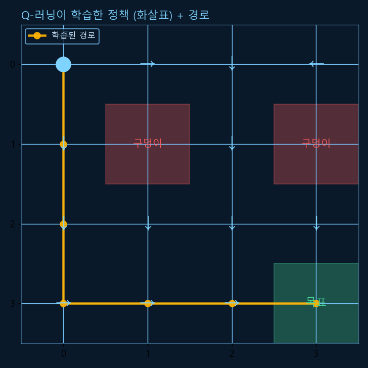
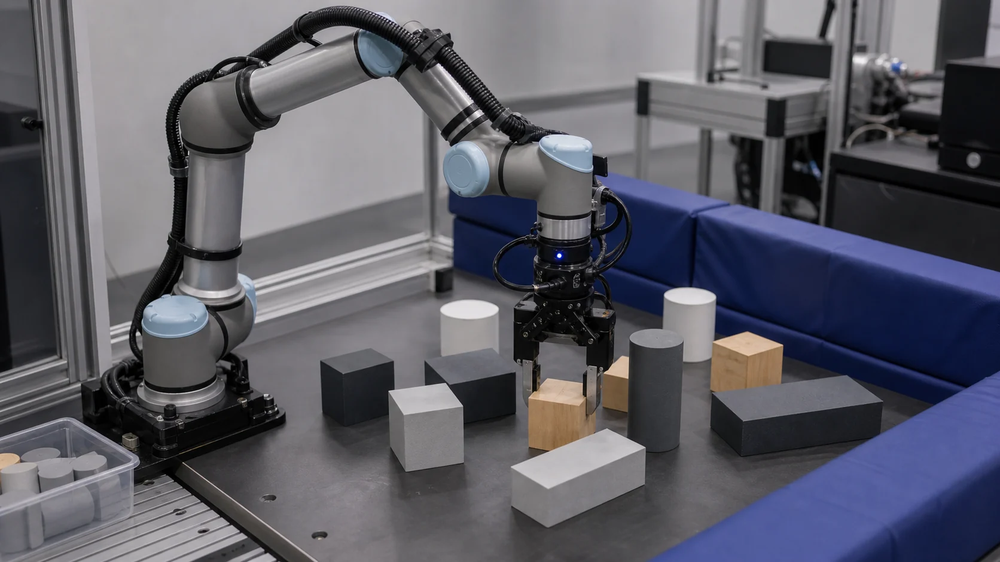

Chapter R10: 매니퓰레이션 & 학습기반 제어
코스의 정점입니다. 로봇팔로 물체를 집고 옮기는 매니퓰레이션(모션 플래닝·MoveIt·그리핑)과, 규칙을 일일이 짜는 대신 시행착오로 스스로 배우는 강화학습(RL), 그리고 시뮬에서 배워 실물로 옮기는 sim-to-real을 다룹니다. (RL은 작은 격자에서 Q-러닝을 실제 실행해 학습되는 정책을 확인합니다.)

1. 매니퓰레이션 — 로봇팔로 조작하기
매니퓰레이션(manipulation)은 로봇팔로 물체를 집고·옮기고·놓는 일입니다. R4의 기구학으로 팔 끝을 어디로 보낼지는 알지만, "거기까지 충돌 없이 어떤 경로로 갈지"를 정하는 게 새 과제입니다.
모션 플래닝(motion planning)이 그 일을 합니다 — 시작 자세에서 목표 자세까지 장애물에 부딪히지 않는 관절 경로를 찾습니다. 핵심 통찰: 이걸 구성공간(C-space, 관절 각도들의 공간)에서의 경로 찾기로 바꾸면, R9의 RRT·RRT* 같은 플래너를 그대로 쓸 수 있습니다(고차원이라 격자 A*보다 샘플링 기반이 유리).
💡 비유로 이해하기: 좁은 창고에서 큰 가구 옮기기
소파를 문 밖으로 빼낼 때, 도착 위치만 아는 걸로는 부족합니다 — 벽·기둥에 안 부딪히게 돌리고 기울이는 경로를 찾아야 하죠. 로봇팔도 똑같습니다. MoveIt은 ROS의 모션플래닝 프레임워크로, 역기구학(R4)·충돌 검사·경로계획(R9)·궤적 실행을 묶어 이 일을 대신해 줍니다.

그리핑(grasping)은 그 끝에서 실제로 "잡는" 문제입니다 — 어떤 자세(grasp pose)로 다가가, 평행/흡착 그리퍼로 쥐고, 미끄러지지 않게 드는 것. 물체 모양·마찰·불확실성 때문에 여전히 어려운 연구 주제입니다.
2. 강화학습 — 시행착오로 스스로 배우기
지금까지는 사람이 규칙(PID·경로·정책)을 직접 짰습니다. 강화학습(RL)은 다릅니다 — 로봇(에이전트)이 환경과 상호작용하며, 상태(state)를 보고 행동(action)하고 보상(reward)을 받아, 보상을 최대화하는 정책(policy)을 시행착오로 학습합니다.
대표 알고리즘 Q-러닝은 각 (상태, 행동)의 가치 Q(s,a)를 학습합니다. 갱신식의 핵심은 시간차 학습: Q(s,a) ← Q(s,a) + α[ r + γ·maxQ(s′) − Q(s,a) ]. 그리고 탐험(새 행동 시도) vs 활용(아는 최선)의 균형을 ε-greedy로 잡습니다.
import numpy as np
rng = np.random.default_rng(0)
N = 4; goal = (3, 3); holes = {(1, 1), (1, 3)}
actions = [(-1,0), (1,0), (0,-1), (0,1)] # 상 하 좌 우
def step(s, a):
dr, dc = actions[a]; nr, nc = s[0]+dr, s[1]+dc
if not (0 <= nr < N and 0 <= nc < N): nr, nc = s # 벽이면 제자리
ns = (nr, nc)
if ns == goal: return ns, 1.0, True # 목표 도달
if ns in holes: return ns, -1.0, True # 구덩이
return ns, -0.04, False # 한 걸음 비용
Q = np.zeros((N, N, 4)); alpha, gamma = 0.5, 0.95
for ep in range(3000):
s = (0, 0); eps = max(0.05, 1 - ep/2000) # ε는 점점 감소
for _ in range(50):
explore = rng.random() < eps
a = int(rng.integers(4)) if explore else int(np.argmax(Q[s[0], s[1]]))
ns, r, done = step(s, a)
# 시간차 갱신: Q ← Q + α[ r + γ·maxQ(ns) − Q ]
Q[s[0],s[1],a] += alpha * (r + gamma*np.max(Q[ns[0],ns[1]]) - Q[s[0],s[1],a])
s = ns
if done: break
# 학습된 그리디 정책으로 경로 따라가기
s = (0, 0); path = [s]
while s != goal and len(path) < 20:
a = int(np.argmax(Q[s[0], s[1]])); s, _, _ = step(s, a); path.append(s)
if s in holes: break
print("학습 경로:", path)
print("목표 도달?", path[-1] == goal, "| 구덩이 회피?", all(p not in holes for p in path))✅ 실행 결과 (검증됨)
학습 경로: [(0, 0), (1, 0), (2, 0), (3, 0), (3, 1), (3, 2), (3, 3)] 목표 도달? True | 구덩이 회피? True
길을 알려준 적이 없는데도, 보상(+목표 / −구덩이 / 작은 걸음 비용)만으로 최단에 가까운 정책(7칸)을 배웠습니다. 위 그래프가 바로 이 결과입니다. 실제 로봇 RL은 보통 신경망(심층 강화학습, DQN·PPO 등)으로 이 아이디어를 확장합니다.
3. Sim-to-Real — 시뮬에서 배워 실물로
실제 로봇으로 수백만 번 시행착오를 하면 느리고 위험하고 망가집니다. 그래서 시뮬레이션(R7 Gazebo)에서 학습한 뒤 실제 로봇으로 정책을 옮깁니다 — sim-to-real입니다.
⚠️ 핵심 난제: 현실 격차(reality gap)
시뮬은 현실과 완전히 같지 않습니다(마찰·지연·센서 노이즈·물성 차이). 그래서 시뮬에서 완벽하던 정책이 실물에선 무너지기 쉽습니다. 대표 해법이 도메인 랜덤화(domain randomization) — 시뮬의 물리·외형 파라미터를 매번 무작위로 바꿔 학습시키면, 어떤 현실이 와도 견디는 강건한 정책이 됩니다. 또 전문가 시연을 따라 배우는 모방학습으로 학습을 빠르게 시작하기도 합니다.
로봇 RL은 아직 샘플 효율(적은 경험으로 배우기)과 안전이 큰 과제입니다 — 그래서 시뮬·도메인 랜덤화·모방학습이 활발히 연구됩니다.
4. 🎉 로보틱스 입문 코스 완주!
축하합니다 — R0부터 R10까지, 로봇을 수학으로 다루는 법부터 스스로 배우는 로봇까지 한 바퀴를 돌았습니다. 모든 조각이 어떻게 이어지는지 한눈에 봅니다.
| 챕터 | 핵심 | 무엇으로 이어지나 |
|---|---|---|
| R0 수학 | 삼각함수·벡터·행렬·미적분·확률 | 모든 챕터의 토대 |
| R1 좌표·변환 | SO(3)·SE(3) 변환 | R4 기구학·R7 TF2 |
| R2 센서 | IMU·LiDAR·칼만 필터 | R9 위치추정 |
| R3 액추에이터 | 모터·PWM·임베디드 | R5 제어 |
| R4 기구학 | FK·IK·자코비안 | R10 매니퓰레이션 |
| R5 제어 | PID·피드백 | R10 학습제어 |
| R6 ROS 2 | 노드·토픽·rclpy | R7~R9 모든 ROS |
| R7 시뮬 | TF2·URDF·Gazebo | R10 sim-to-real |
| R8 인식 | OpenCV·ArUco | R9 SLAM |
| R9 SLAM·내비 | 필터·A*·Nav2 | R10 모션플래닝 |
| R10 학습·조작 | MoveIt·RL·sim-to-real | 🎯 도착! |
이제 막막함은 사라졌을 겁니다. 다음 단계는 직접 만들어 보기 — 라즈베리파이 + 모터로 작은 차동구동 로봇을 만들거나(R3·R4), TurtleBot 시뮬(R6·R7)로 Nav2를 돌리거나(R9), Gym 환경에서 RL을 학습(R10)해 보세요. 준비될 부록 R-A(Python 치트시트)·R-B(면접)·R-C(수학 복습)가 실전을 도울 겁니다. 수고하셨습니다! 💪🤖